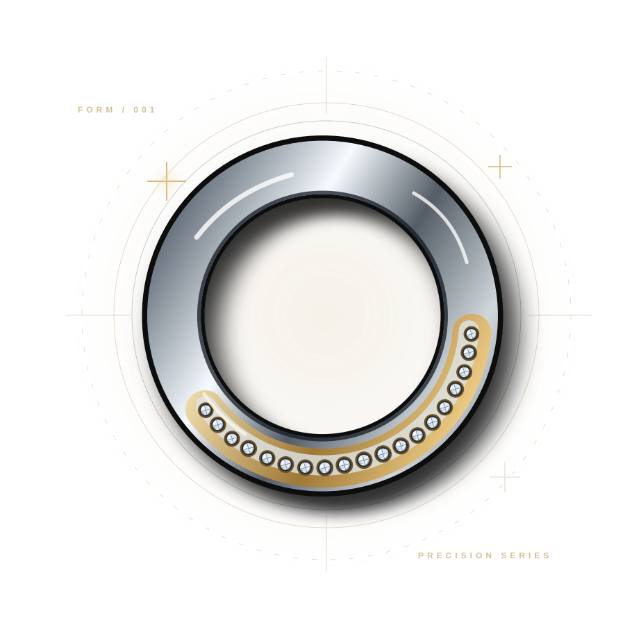

O SEU
ESTILO NÃO
PEDE PERMISSÃO.
Perfurações e joias para quem entende que cada detalhe faz parte da própria identidade.

A ARTE DE SER
EXATAMENTE VOCÊ.
Um piercing pode ser discreto ou marcante. O que importa é que seja uma escolha sua. Aqui, a proposta é unir personalidade, joias e informação para ajudar você a encontrar o detalhe certo.
ENTENDA A EXPERIÊNCIA ↗JOIAS COM
PRESENÇA.
Do traço minimalista ao brilho que chama atenção. Uma seleção de peças para diferentes estilos.
Imagens ilustrativas e fotos das joias enviadas pelo estúdio. Aplicações, materiais e disponibilidade sob consulta.
AS JOIAS.
SEM FILTROS.
Veja as peças fotografadas pela Piercing of the Dreams. Cada uma tem seu próprio estilo e acabamento.
ESCOLHA COM
CONFIANÇA.
Informação, avaliação e cuidado são tão importantes quanto a estética.
CONVERSA INICIAL
Compartilhe referências, conte suas dúvidas e explique o estilo que procura.
ESCOLHA DA JOIA
Considere formato, materiais, medidas e opções indicadas após avaliação individual.
AVALIAÇÃO DA PERFURAÇÃO
Nem toda anatomia permite todas as perfurações. A decisão deve respeitar a viabilidade e a segurança.
ORIENTAÇÕES E CUIDADOS
Entenda o processo de cicatrização e siga as orientações individualizadas do profissional.
O CUIDADO
FAZ PARTE DA ARTE.
O tempo de cicatrização muda de pessoa para pessoa. Estas são dicas gerais e não substituem as orientações específicas recebidas no atendimento.
HIGIENIZAÇÃO CORRETA
Use solução salina estéril apropriada para feridas, conforme orientação profissional.
EVITE ATRITO
Não gire a joia nem manipule a perfuração sem necessidade.
RESPEITE A CICATRIZAÇÃO
Evite retirar ou trocar a joia precocemente. Em caso de sinais de infecção, procure avaliação de saúde.
SEU ESTILO.
SUA PRÓXIMA
ESCOLHA.
Curtiu alguma peça ou está pensando em uma nova perfuração? Prepare sua mensagem para conversar sobre opções, valores e disponibilidade.
PD / PIERCING OF THE DREAMSCONTE SUA IDEIA.
O formulário só prepara uma mensagem para copiar. Ele não envia seus dados nem confirma agendamento.